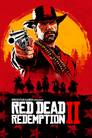

|  | |
| Tiempo de juego | No Jugado |
| Última actividad | Nunca |
| Añadido | 11/5/2024 22:37:13 |
| Modificado | 11/6/2024 22:30:18 |
| Estado de finalización | No Jugado |
| Librería | Playnite |
| Fuente | 4TB TANK |
| Plataforma | PC (Windows) |
| Fecha de lanzamiento | 2018 |
| Puntuación de la Comunidad | 91 |
| Puntuación de la Crítica | 93 |
| Puntuación de usuario | |
| Género | Acción Aventura |
| Desarrollador | Rockstar Games |
| Editor | Rockstar Games |
| Característica | Compat. Parcial Con Mando Compras Dentro De La Aplicación Cooperativo Cooperativo En Línea Jcj Jcj En Línea Logros De Multijugador Remote Play En Móvil Remote Play En Tableta Un Jugador |
| Enlaces | Punto de encuentro Discusiones Guías Noticias Página de la tienda PCGamingWiki Logros |
| Tag | Acción Ambientales Aventura Buena trama Caballos Disparos Disparos en tercera persona FPS Gran banda sonora Multijugador Mundo abierto Para adultos Preciosos Primera persona Realistas Sandbox Sangriento Tercera persona Un jugador Vaqueros |